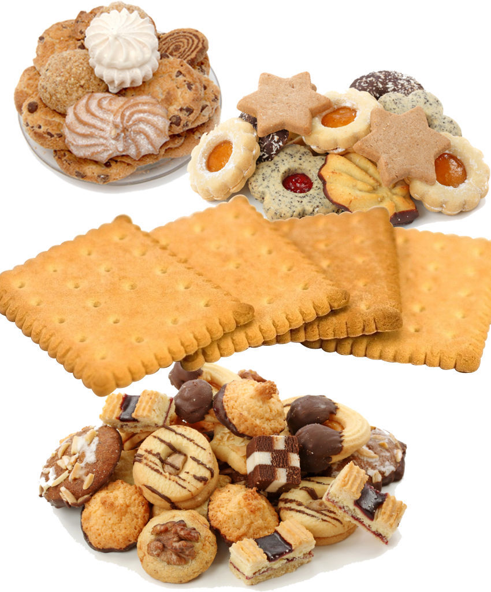

饼干是以谷类粉(和/或豆类、薯类粉)等为主要原料，添加或不添加糖、油脂及其他原料,经调粉(或调浆)、成型、烘烤(或煎烤)等工艺制成的食品，以及熟制前或熟制后在产品之间(或表面、或内部)添加奶油、蛋白、可可、巧克力等的食品。
饼干的词源是"烤过两次的面包"，是从法语的bis(再来一次)和cuit(烤)中由来的。它是用面粉和水或牛奶不放酵母而烤出来的，可作为旅行、航海、登山时的储存食品，在战争时期用于军人们的备用食品也是非常方便适用的。
初期饼干的产业是上述所说的长期的航海或战争中的紧急食品的概念，它开始是以HandMade-Type(手工形态)传播，产业革命以后因机械技术的发达，饼干的制作设备及技术迅速发展，扩散到全世界各地。饼干类包含
饼干(Biscuit)，曲奇饼干(Cookies)，苏打饼干(Cracker)和披萨饼干(Pizza)等等。 